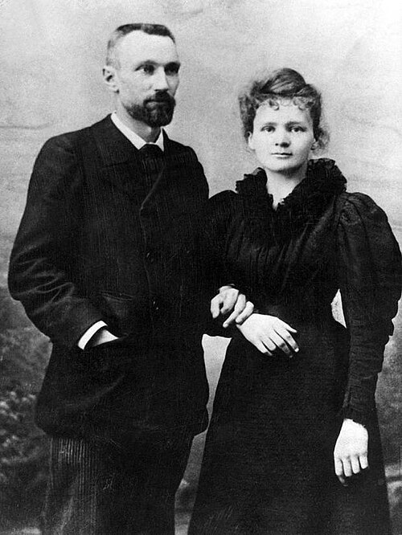
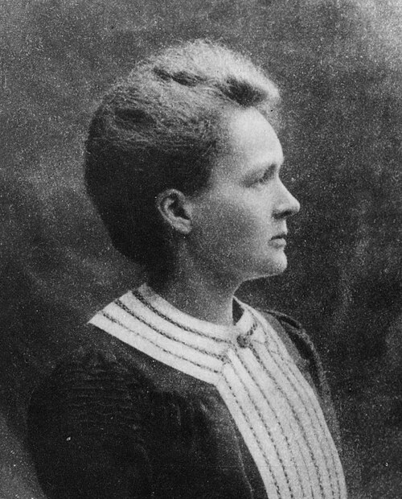
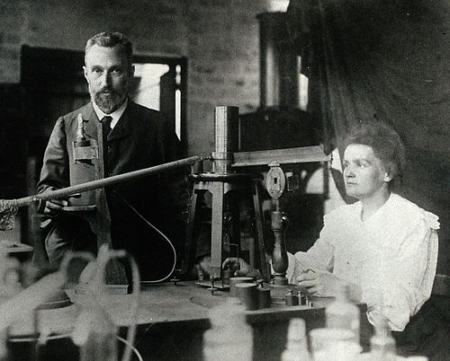

A pioneering physicist and chemist, and the first woman to win a Nobel Prize.
1867 - 1934
Maria Salomea Skłodowska Curie better known as Marie Curie was a Polish and naturalised-French physicist and chemist. She shared the 1903 Nobel Prize in Physics with her husband Pierre Curie "for their joint researches on the radioactivity phenomena discovered by Professor Henri Becquerel". She won the 1911 Nobel Prize in Chemistry for the discovery of the elements radium and polonium, by the isolation of radium and the study of the nature and compounds of this remarkable element.

She was the first woman to win a Nobel Prize, the first person to win a Nobel Prize twice, and the only person to win a Nobel Prize in two different scientific fields. Marie and Pierre were the first married couple to win the Nobel Prize and launching the Curie family legacy of five Nobel Prizes. She was, in 1906, the first woman to become a professor at the University of Paris.
She was born in Warsaw, in what was then the Kingdom of Poland, part of the Russian Empire. She studied at Warsaw's clandestine Flying University and began her practical scientific training in Warsaw. In 1891, aged 24, she followed her elder sister Bronisława to study in Paris, where she earned her higher degrees and conducted her subsequent scientific work. In 1895, she married Pierre Curie, with whom she conducted pioneering research on radioactivity—a term she coined. In 1906, Pierre died in a Paris street accident.


Under her direction, the world's first studies were conducted into the treatment of neoplasms by the use of radioactive isotopes. She founded the Curie Institute in Paris in 1920, and the Curie Institute in Warsaw in 1932; both remain major medical research centres. During World War I, she developed mobile radiography units to provide X-ray services to field hospitals.While a French citizen, Marie Skłodowska Curie, who used both surnames, never lost her sense of Polish identity. She taught her daughters the Polish language and took them on visits to Poland. She named the first chemical element she and Pierre discovered polonium, after her native country.
Marie Curie died in 1934, aged 66, at the Sancellemoz sanatorium in Passy (Haute-Savoie), France, of aplastic anaemia likely from exposure to radiation in the course of her scientific research and in the course of her radiological work at field hospitals during World War I. In addition to her Nobel Prizes, she received numerous other honours and tributes; in 1995 she became the first woman to be entombed on her own merits in the Paris Panthéon, and Poland declared 2011 the Year of Marie Curie during the International Year of Chemistry. She is the subject of numerous biographies, including Madame Curie by her daughter Ève. The synthetic element curium is named in her honour.